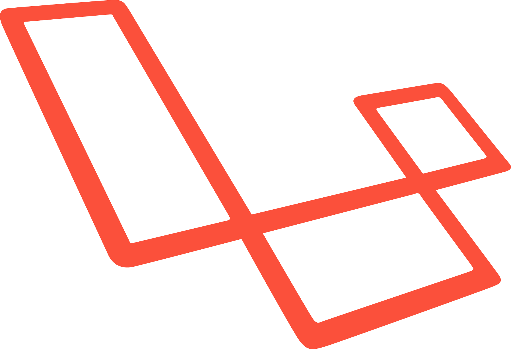

About me
My name is Peter, I am an accountancy graduate who has experience in many different industries. I always follow my passion and have worked extensively within the food and hospitality sector.
My love for technology started after attending a seminar during my time at Booking.com. From this point onwards I have taught myself coding through various online courses such as Lynda.com, Codecademy and edX.
Having found the JustIT course I have relished the opportunity to learn coding in a more structured environment and I am now working hard to ensure that I have all the skills required to work as a php developer.
